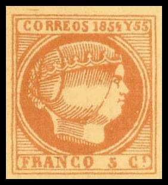

A proof, made by Schoeder of a 5 c Antioquia stamp. I don't know the distinguishing characteristics of this forgery.
Note: on my website many of the
pictures can not be seen! They are of course present in the
catalogue;
contact me if you want to purchase the catalogue.
Oswald Schroeder was a stamp forger of Leipzig (Germany) around 1890, since he was partner in the printing firm Schroeder & Naumann in Leipzig (Germany). He produced 56 different forgeries, before he got discovered and fled to Zurich.
In The London Philatelist 13 (1904), page 305
(see also http://www.archive.org)
the following text can be found:
"Mr. R. Ehrenbach then showed a collection of the dangerous
forgeries made by Oswald Schroeder, of Leipzig, about twenty
years ago, which had been sent to him by Mr. W.Moser for
exhibition to members of the Society. Mr. Moser stated that the
collection was the property of the Dresden Society, that the
President, Dr.Kloss, obtained the forgeries many years ago from
Schroeder, and the Society had lent them to him to forward to the
members of the London Society for their inspection.
Mr.R.Ehrenbach was asked to convey to Mr. Moser, and through that
gentleman to the Dresden Society, the Society's appreciation of
their courtesy, and to thank them for the loan of the specimens.
The collection comprised the following forgeries:
Antioquia - First issue. 2 1/2 c dull blue; 5 c., greyish green;
10 c., lilac-green ; 1 p., carmine-red.
Bolivar. - First issue. 1 p., red.
British Guiana - First issue. 12 c., black on deep blue.
Colombia - 1861 issue 2 1/2 c black ; 5 c., olive-yellow ; 10 c.,
blue ; 20 c., vermillion, 1 p., dull rose. 1862 issue : 10 c.,
bright blue ; 20 c., bright carmine. "Sobre Porte,"
1856 issue : 25 c., black on blue ; 50 c., black on yellow ; 1
p., black on rose.
Cordoba. - 5 c., dull blue ; 15 c., lilac ; 25 c., orange, 50 c.,
green ; 1 p., carmine.
Finland. - first issue. Envelope stamps. 10k., red ; 20 k.,
black.
France. - Unpaid Letter stamps. 40 c., sky-blue ; 60 c., yellow
ochre.
Hanover. - 1863. 3 pf. green.
Hyderabad. - Official hand-stamp, originally known as
Koorshedjah. Black on thin blue wove paper.
Mexico. - Guadalajara locals, 1867 issue : 1/2 r., black, on
white wove paper ; 25., black, on lilac-rose laid paper ; 2r.,
black, on green laid paper ; 1 p., black, on bright lilac wove
paper. 1868 issue : 1 r., black, on green laid paper ; 1 r.,
black, on green wove paper ; 2 r., black on lilac-grey wove
paper.
Philippine Islands. - 1855 issue. One of the four varieties. 5
c., dull vermillion.
San Domingo. - First issue: 1/2 r., black, on lilac-rose laid
paper. Second issue : 1/2 r., black, on pale green laid paper.
Saxony. - First issue. 3 pf., vermillon ; two different forgeries
of this stamp.
Spain. - 1851 : 2 r., dull red. 1853 : 2r., bright red. Madrid :
3 c., gold.
Tolima. - First issue. 5 c., black, on pale blue laid paper ; 10
c., black, on white wove paper.
Wenden. - 1863 issue : 2 kop., red and green. 1864 issue : 2
kop., red and green.
A proof, made by Schoeder of a 5 c Antioquia stamp. I don't know
the distinguishing characteristics of this forgery.

Schroeder forgery of the 1855 issue of the Philippines (image
obtained from Nigel Gooding). According to Nigel, the '8' is too
slanting and the '5' of the bottom inscription is too small. The
letters are slightly different. This forgery is an imitation of
position 2 on the plate.

Shroeder forgery of the 1870 5 c value of Tolima.
In the book "The Oswald Schröder Forgeries" by Robson Lowe, forgeries of the following countries are described: Antioquia, Bolivar, British Guiana, Buenos Aires, Cape of Good Hope, Cordoba, Dominican Republic, Finland, France, Hanover, India, Mexico (Guadalaraja), Philippines, Russian Levant, Saxony, Spain, Tolima, United States (Baltimore) and Wenden.
Guadalajara forgeries of Schroeder:

Schroeder made forgeries of the '1867 2 reales' and '1867 Un Peso' values, but also the '1868 un real' and the '1868 2 reales' values. I've seen them on different coloured papers.

Schroder forgery of the 5 c 1861 Colombia issue.
Literature:
The Oswald Schröder Forgeries by Robson Lowe (I haven't seen
this book myself).
{kind=link}